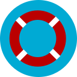
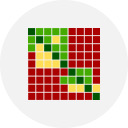

A fitness tracking app optimized for marathon runners
Android, Estimote Beacons, Firebase

A pantry app built to track you food's expiry dates and provide recipes
Android, Clarifai, Spoonacular
A virtual tarot Android app fueled by Drake lyrics and machine learning
Android, Parse, Indico.io
a Myo armband powered gesture to text to speech translator
Java, Lua and an Arduino

a complementary digital edition of the top student newspaper in the TDSB
HTML, CSS, JQuery

a rendition of the classic arcade games with cool new features!
Java applet in jGrasp
Graffiti, the North Toronto CI student newspaper, is one of the most decorated student newspapers in all of Toronto. Coming out with 4 print copies a year sometimes is not enough. Me and a team created a digital edition of the newspaper. This allowed for additional content to complement the print edition of the newspaper.
Some of these advantages of the digital platform are:
- Sharing of articles and content with those not at the school
- Additional media outlets (Podcasts, videos)
- Time sensitive news (school sports scores, winners)
the website was a huge success leading to increased visibility and readership to the infamous student newspaper.

|
Tetris is one of the most storied computer games of all time. From its humble beginnings in arcades to being the bestselling Nintendo Gameboy game. Anyone and everyone knows what Tetris is.
Serving as my capstone project for my grade 12 computer science class I challenged myself to recreate and expand on this game in cool new ways, and make it look pretty.
Built in Java using jGrasp and utilising the Swing library, allowed me to implement cool new game modes such as invisible and ludicrous speed. All the while maintaining the core mechanics and feel of the classic arcade game.
|
|
At its core, the Myo allows the user to trigger events with gestures. When coming up with a potential project for EngHack 2015, my team thought of creating a sign language tool using the Myo. However the Myo cannot detect the small muscle movements caused by the position of a finger. Therefore we decided to come up with a way to use the Myo as a communication tool.
The end result was a gesture to text to speech communicator that is linked to the 15 most common phrases to assist anyone who can't speak the language, or can't speak total.
Our program through Bluetooth sent the information to a computer which has audio and visual feedback to communicate the phrase. In addition, we integrated an Arduino Uno to showcase the endless possibilities of this device.
|
|

|
At HackThe6ix in January 2016, one of the main sponsers and available APIs was the indico.io machine learning API. One of the main features is to extract information from text such as the mood of the sentence, the political lean and the key words to that sentence. With this information at our disposal, we decide to apply this text recognition to create a simple Drake themed virtual tarot machine similar to petersanswers.com in the form of an Android application.
By creating a database on Parse we are able to easily store the tags and information of the Drake lyrics (responses) and quickly pull it down to be used in the app.
Front end wise, we creaded an simple Android app featuring a simple input textbox and a button to recieve your blessing from the 6god
|
|
|
At ConuHacks 2016, one of the possible challenges was to take an existing application, Smart Pantry, and make it even sweeter. Through our preliminary usage, we recognized that there were some easy areas of enhancement.
One of the areas that we recognized was it took too long to enter the items into your pantry. Our solution was to implement the Clarifai image recognition api which can produce tags based off the picture of an image. For which we would sift through to determine the actual food name, out of the 20 returned image tags.
We concluded that the main usage of this app is the recognition of when food will go bad, however the app offered no functionality to deal with this information. So, we created an option that searches through the spoonacular database of recipes, using your current pantry and prioriting your most at risk food items.
|
|
|
Strava has become one of my most used apps over the past couple of years. It's mixture of competition and analytics has made me grow as a Cyclist. One of it's main features, segments, allow the user to get a greater understanding of their activity to improve and easily track goals. We wanted to bring this idea to a marathon setting by harnessing the power of the estimote IoT beacons.
We used these beacons as markers to save information and receive information to the user. Allowing them to receive contextual voice notications such as their distance remaining or placing. Information is also stored to show post race analytics such as speed, step count, and calories burned.
This app was selected as a winner at Wearhack Toronto 2016, and will be showcased at the Sick Kids Great Camp Adventure Walk in September 2016.
|
|
City Of TorontoJune 2013 - Sept 2015 |
 | |

|
North Toronto CI |
|
Sporting LifeMay - Sept 2015 |

|
|

|
University of WaterlooSept 2015 - April 2020 |
|
Cirba IncJan - Apr 2016 |
 |